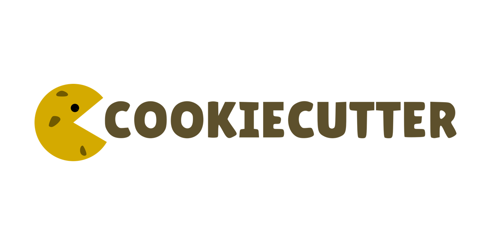

Future Work¶
Automated Cluster Run¶
As described before, Luigi ExternalProgramTask can be used to trigger SSH connection. So instead of manually building the model on remote cluster, we can use Python subprocess to send several commands that includes resource allocation request, activating environments and running the convolutional neural network package. An example of using subprocess is shown below where the subprocess runs a command, waits until it is finished and then execute the second command and so on
import subprocess
import os
cmd_list = ['srun --partition=gpu --nodes=1 --cpus-per-task 4 --export=ALL --gres=gpu:v100-sxm2:1 --mem=2Gb --time=02:00:00 --pty /bin/bash', 'python -m CNN -d "data/OCTReduced" -o "data/ConvNeuralTrain/retinal_cnn.h5" -a "train" -l "data/ConvNeuralTrain/retinal_cnn.h5"']
out = []
err = []
for cmd in cmd_list:
args = cmd.split()
print 'args=',args
proc = subprocess.Popen(args,
stdout=subprocess.PIPE,
stderr=subprocess.PIPE)
(stdoutdata, stderrdata) = proc.communicate()
out.append(stdoutdata)
err.append(stderrdata)
print 'out=',out
print 'err=',err
This feature is already under development.
Cookiecutter¶
This problem of runnig a compute-intensive part of the code on a cluster computer is very generic and applies to many problems esp. in the field of machine learning. So this is a very good candidate of a cookiecutter template.